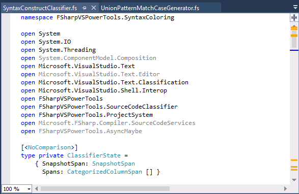
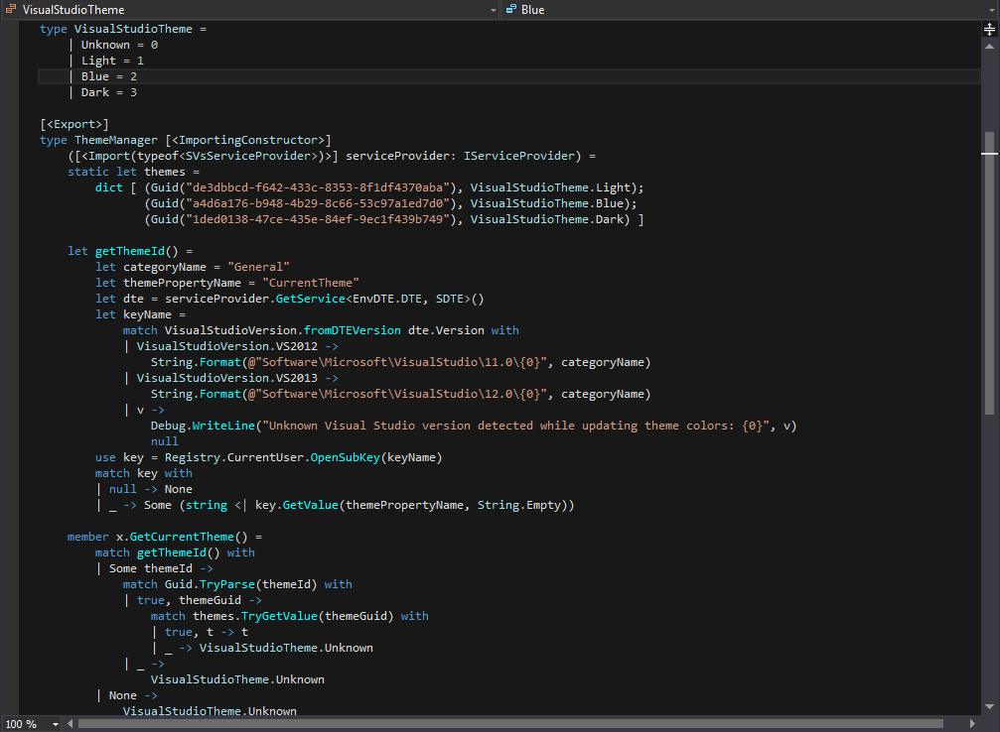
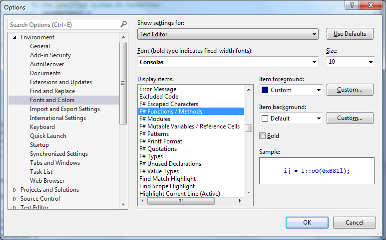

Syntax coloring
We currently support coloring:
- types
- value types
- modules
- functions / methods (off by default)
- quotations
- patterns (off by default)
- mutable variables / reference cells (off by default)
- printf formatter
- escaped characters in string literals
- unused non public types, methods, functions and values declarations
- unused open statements
Graying out unused declarations
Currently unused non public types, methods, functions and values declarations are checked. Beware that this feature is only 100% reliable when the code has no type error. This setting is available in General options. It is disabled by default because there might be performance issues on large files.
Graying out unused opens
If an open declaration hasn't been used anywhere in the current file, it will be marked as unused. This setting is available in General options. It is disabled by default because there might be performance issues on large files.
Unused declaration markers
If unused declarations or open statements are found in the current file, orange markers will appear on top of vertical scroll bar. You can navigate to lines consisting of unused items by clicking on these markers (see the screenshot below).

Here is how the editor looks like in blue & dark theme:


How to customize colors
Colors of syntax constructs can be customized in "Tools --> Options --> Environment --> Fonts and Colors --> Display items" via:
- F# Escaped Characters
- F# Functions / Methods
- F# Modules
- F# Mutable Variables / Reference Cells
- F# Patterns
- F# Printf Format
- F# Quotations
- F# Types
- F# Value Types
- F# Unused Items
You can press Ctrl + F in 'Display items' to quickly navigate to these colors.
